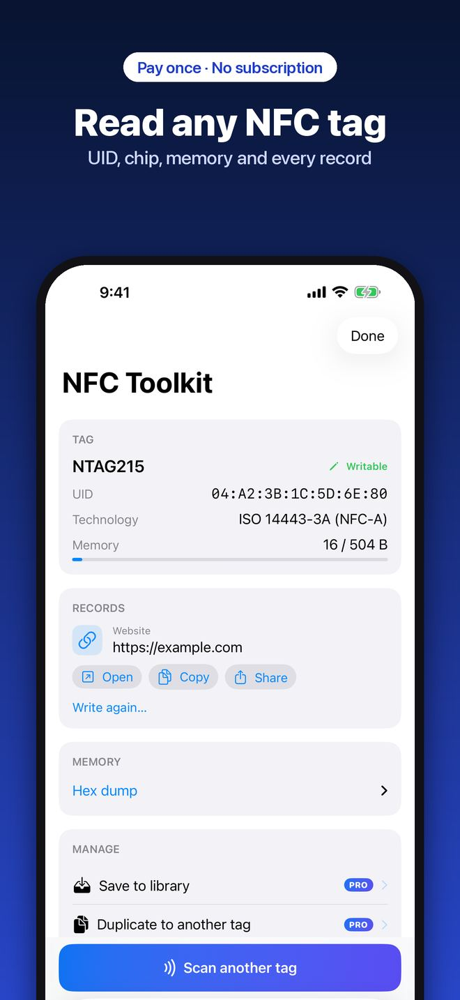
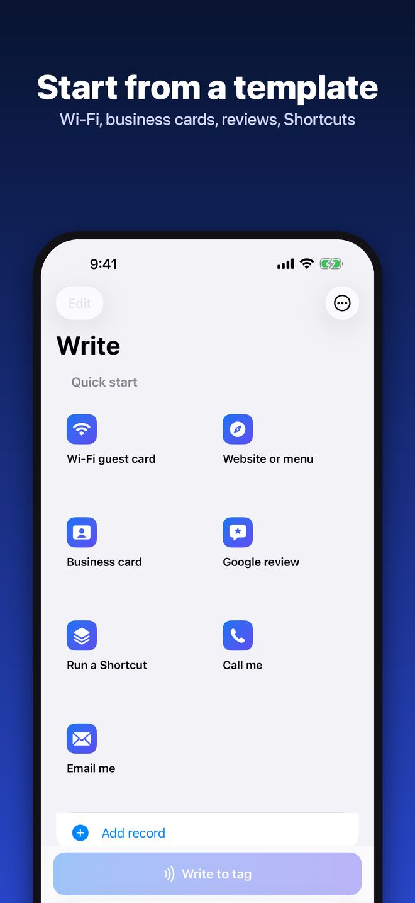
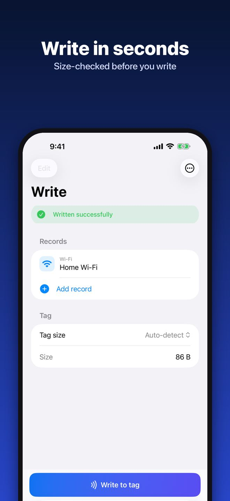
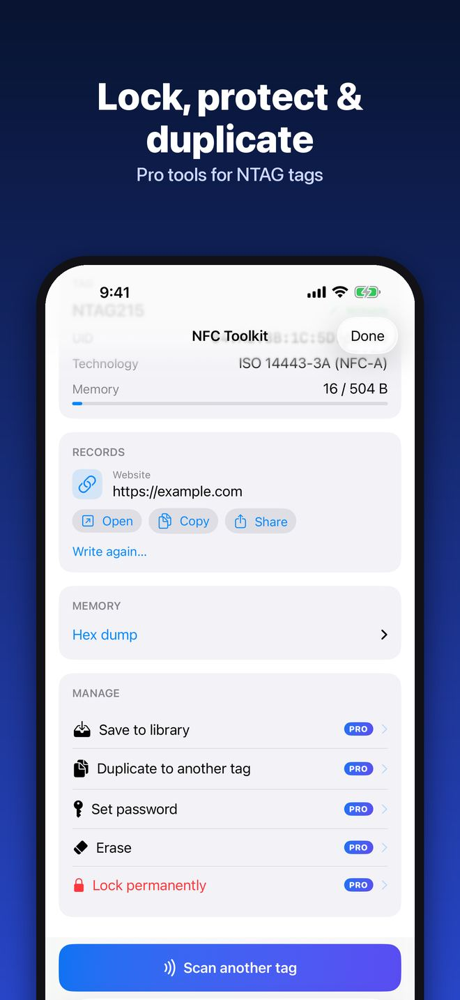
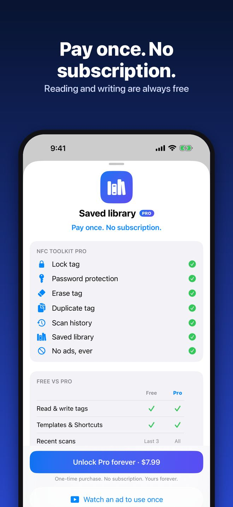

Pay once. No subscription.
Read, write and lock NFC tags on your iPhone
NFC Toolkit reads any NFC tag and writes Wi-Fi, links, contact cards and Shortcuts in seconds. Reading and writing are free. Pro tools are a single purchase, never a subscription.
Free on iPhoneDownload on the App StoreRequires iOS 17 or later (iPhone XS, XR, SE 2nd generation or newer). No account needed.

Everything you need for NFC tags
Read any tag
- UID, chip type, capacity and memory
- Every record decoded: websites, text, phone, email, SMS, locations, Wi-Fi and contacts
- Open, call, copy or add a contact straight from a scan
- Hex memory dump for developers
Write in seconds
- Websites, text, phone, email, SMS, locations, Wi-Fi networks and contact cards
- Several records on one tag
- Live size check for NTAG213, 215 and 216
Templates
- Wi-Fi guest card
- Business card
- Google review link
- Website or menu
- Run a Shortcut, Call me, Email me
Pro tools
- Password-protect NTAG tags
- Lock tags permanently, with a clear confirmation
- Erase and duplicate tags
- Saved library and full scan history
Automation
- Shortcuts actions to scan or write a tag
- Home Screen widget with one-tap scanning
- Share a link or contact from any app into NFC Toolkit
Private by design
- No account, no cloud
- Tags, history and library stay on your iPhone
- No subscription, ever
Free or Pro
Reading and writing are always free. Use a Pro tool once by watching a short ad, or unlock everything forever with one payment: US$7.99 in the United States, with local pricing elsewhere on the App Store. No subscription, ever.
| Feature | Free | Pro |
|---|---|---|
| Read tags: UID, chip, records, hex dump | ✓ | ✓ |
| Write tags, several records per tag | ✓ | ✓ |
| Templates and Shortcuts actions | ✓ | ✓ |
| Home Screen widget and share extension | ✓ | ✓ |
| Recent scans | Last 3 | Full history |
| Password protection | Once per ad | ✓ |
| Permanent lock | Once per ad | ✓ |
| Erase and duplicate | Once per ad | ✓ |
| Saved library | Once per ad | ✓ |
| Ads | Only if you choose to watch one | None |
| Price | Free | One-time purchase |
Screenshots




Guides
How to make a Wi-Fi NFC tag on iPhone
Let guests tap to get your Wi-Fi, and what iPhone and Android guests actually see.
How to make an NFC business card
vCard on the chip or a link to a page: which one works for whom.
NFC automations with iPhone Shortcuts
Run a shortcut by tapping a tag, with the built-in NFC trigger or a Run a Shortcut tag.
Google review NFC tag or stand
Tap-to-review for your business: get the right link, add a QR fallback, prevent tampering.
How to read and write NFC tags on iPhone
Supported iPhones, where the antenna is, NTAG213/215/216 sizes, locking and passwords.
Frequently asked questions
Is NFC Toolkit free?
Yes. Reading tags, writing tags and all templates are free. For Pro tools (password protection, permanent lock, erase, duplicate, saved library and full history) you can watch a short ad to use one once, or unlock everything with a single purchase.
Is Pro a subscription?
No. Pro is a one-time purchase (US$7.99 in the United States; the App Store shows your local price). It unlocks every Pro tool forever and removes ads. If you reinstall or change iPhone, use Restore purchases in the app.
Which iPhones are supported?
NFC Toolkit needs iOS 17 or later, which means iPhone XS, iPhone XR, iPhone SE (2nd generation) or any newer iPhone. Check the compatibility section on the App Store page for the current requirement. iPads don't have an NFC tag reader.
Which NFC tags should I buy?
NTAG213, NTAG215 or NTAG216 stickers, cards or key fobs. They work well with iPhone, and NFC Toolkit's size check, password protection and lock tools are built for them. Avoid MIFARE Classic tags: iPhones can't read or write them.
Can it copy my hotel key, office badge or bank card?
No. Duplicate copies the data (NDEF records) from one tag onto another writable tag. It doesn't clone a tag's UID, and it can't copy secured access cards or payment cards.
Can I undo a permanent lock?
No. Locking makes a tag read-only forever; no app can unlock it. NFC Toolkit asks you to type LOCK to confirm. If you might want to change the tag later, use password protection instead.
Do other people need the app to use my tags?
It depends on what you write. Website links, phone numbers, email and SMS open with the built-in NFC reader on iPhone XS and later and on most Android phones. iPhones don't act on Wi-Fi or contact records on their own; they need an NFC app.
Does NFC Toolkit collect my data?
Your tags, scan history and library stay on your iPhone. There is no account and no cloud. The free version's optional ads come from Google AdMob, which may collect device identifiers. See the privacy policy.
More answers and contact details on the support page.